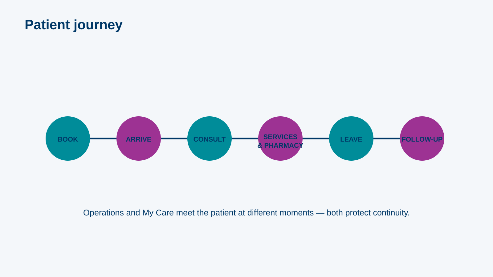
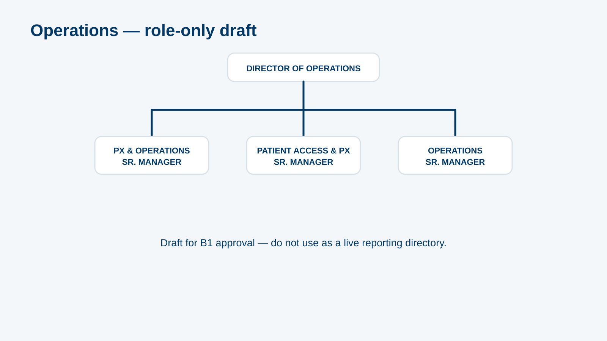
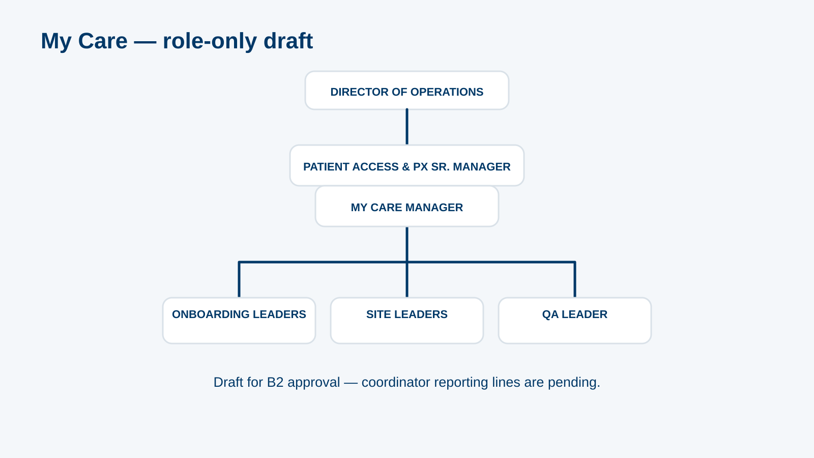
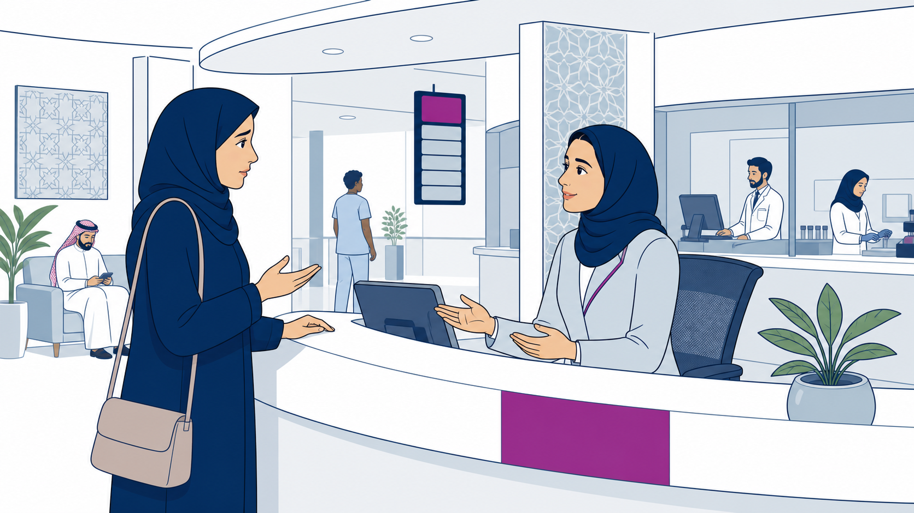

MODULE 04
Who Does What: Operations & My Care
~15 minutes
✦ops-000 · L1 Title · title visual · supplied client logo and background onlyWho Does What: Operations & My Care · official client logo and palette applied to every reference screen.
storyboard.md; screenshots, policy values and hotspot coordinates remain subject to the module’s source lock.MODULE 04
~15 minutes
✦ops-000 · L1 Title · title visual · supplied client logo and background onlyL3 Content ·
"Right team, first time." · A patient shouldn't have to tell their story twice.
ops-001 · content_slide · screen visual reference only · inspect final responsive build before approvalL3 Content ·
Horizontal journey: Book → Arrive & register → Consult → Lab / Radiology / Pharmacy → Leave → Follow-up. Each stage shows which team leads (Operations, My Care …

ops-002 · hotspot · visual asset: ops-img-journey · screen visual reference only · inspect final responsive build before approvalL3 Content ·
7 items from slide 2, each with one example ("Recovery: a patient waited 40 minutes; the PX officer apologises and fixes the next visit")
ops-010 · accordion · screen visual reference only · inspect final responsive build before approvalL3 Content ·
Redrawn role-only chart (B1): Director of Operations → PX & Operations Sr. Manager · Patient Access & PX Sr. Manager · Operations Sr. Manager → PX Managers → …

ops-011 · labeled_diagram · visual asset: ops-img-ops-chart · screen visual reference only · inspect final responsive build before approvalL3 Content ·
7 items from slide 5, with DMP/CHP expanded (B3)
ops-020 · accordion · screen visual reference only · inspect final responsive build before approvalL3 Content ·
Redrawn role-only chart (B2): Director of Operations → Patient Access & PX Sr. Manager → My Care Manager → Onboarding leaders, site leaders (J1; J2–J4) → Coordinators; QA …

ops-021 · labeled_diagram · visual asset: ops-img-mycare-chart · screen visual reference only · inspect final responsive build before approvalL3 Content ·
PXO · FM · Coord · DMP · CHP · HHC · PR1 · VIP team (B3)
ops-022 · flashcards · screen visual reference only · inspect final responsive build before approvalL4 Question ·
10 cards → Operations / My Care: lab TAT KPI · clinic look and feel · on-spot complaint at reception · end-to-end journey · support a doctor's inquiry …
ops-030 · drag_drop · screen visual reference only · inspect final responsive build before approvalL5 Scenario ·
4 nodes (routing per B7): (1) A patient at reception is upset that her lab result isn't ready → Operations / PX officer on site; (2) A diabetic …

ops-031 · decision_scenario · visual asset: ops-img-reception-scenario · screen visual reference only · inspect final responsive build before approvalL4 Question ·
"The PX officer can't resolve a complaint on the spot. Who is the next step?" → site Patient Experience Manager (per B1)
ops-032 · mcq · screen visual reference only · inspect final responsive build before approvalL4 Question ·
PXO ↔ "patient experience on site" · My Care Coordinator ↔ "follow-ups and bookings" · My Care Onboarding Leader ↔ "enrols patients in My Care" · Operations Sr …
ops-033 · matching · screen visual reference only · inspect final responsive build before approvalL6 Results / close ·
Right team, first time · Link: live staff directory (intranet) · Next: module 05/06 (clinicians) or 08 (EHR)
ops-090 · summary · screen visual reference only · inspect final responsive build before approval